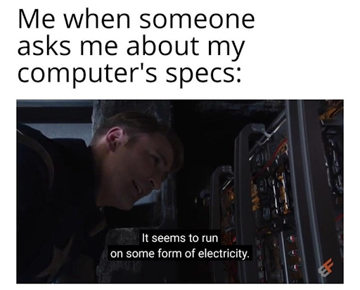
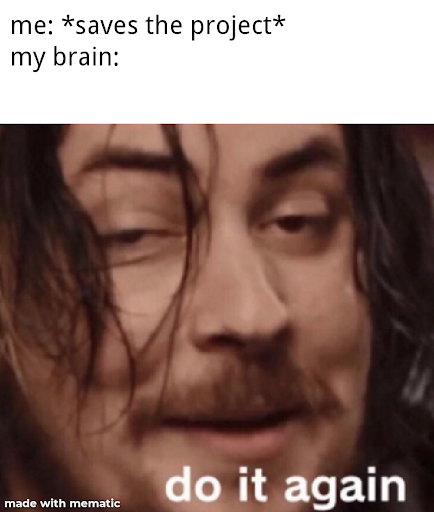

Welcome To my FAVORITE Part of the Site!
Here you will find answers to your most BURNING questions & learn secrets that even my mother doesn't know about me (Shhh... Don't tell her!).
Why does this FAQ exist?
The idea is inspired by UncommentatedPannen! He made a FAQ page for his Youtube channel to keep people from asking the same questions over and over again. This FAQ exists for the same reason, however, I also use this as a place to document my history as a Youtuber and share fun facts about my channel.
Where did the name The Bread Pirate come from?
Short Answer: It’s a reference to the “The Dread Pirate Roberts” from The Princess Bride.
Fun Answer: I earned the title for my exploits in the Spanish Main! I plundered so many grain shipments that they dubbed me The Bread Pirate. To this day, I wear it as a badge of honor.
Real Answer: I became a huge fan of The Princess Bride after my mom forced me to watch it in 2015. From then on I was a Princess Bride apostle. I read the unabridged book twice (it was really hard to find a copy), watched all the behind the scenes footage, made videos about it, and became the biggest Princess Bride fan ever.
Okay, now fast forward. Pretend we’re doing that thing with the VHS Tape where it actually speeds up…

In June 2016, me and some friends created a new Terraria world with the intent of making a let's play series (Terraria is a side-scrolling video game and is similar to Minecraft.). We needed usernames and even though I already had a username (Major Burton Wester) I decided to use something different. I went with The Dread Pirate -- the name of the notorious pirate captain from The Princess Bride.
Hey, you got the name wrong! It’s supposed to be Bread, not Dread!
What the heck? How did you get into my FAQ?
Oh, well you left the door unlocked so I thought I’d walk in.
That was very rude of you. Knock next time.
Okay... sorry.
Anyways, I typed in the name The Dread Pirate and customized my character. But as I was customizing my character, I noticed a typo. I had used a B instead of a D in the word Dread!
Thus, I accidentally created the name “The Bread Pirate!”
See! Didn’t I tell you it was supposed to be Bread!
Yes. You’re very smart. Now shut up.
As I was saying... I thought the name was funny, so I went online to see if the username was already taken. It wasn’t. So, in the middle of our recording, I declared that my new username was The Bread Pirate.
Sadly, the let's play was never published and I didn’t have the foresight to save the footage, so we’ll just have to go by word of mouth.
Do you still respond to EVERY comment?
Unfortunately, not anymore. When my channel had 900 subs I was able to do that. That is why I often added the phrase, “Remember! I respond to every comment.” within my old videos. But during February 2020 my channel exploded from 900 subs to 18,000 subs. After that I could no longer reply to every comment since there were too many to keep up with.
It breaks my heart and I wish it were possible for me to talk to everyone, so I apologize to anyone who’s comments I can’t get to.
I made an update video about it if you’re curious.
What is your favorite Zelda game?
I can’t decide!
My first Zelda game was Twilight Princess. I have played it more than any other game in the series, but the game has glaring flaws which prevent me from making it my favorite.
Meanwhile, Breath of the Wild is the game I am most known for, but it’s dungeons are too small, I don’t like the sci-fi elements, and it’s missing the item system I loved from past games. I also don’t have a lot of nostalgia for it.
How about this… I will tell you what I tell everyone…
The goal of a video game is to be fun, and each Zelda game provides fun in a different. So, each game is my favorite depending on the type of fun I am looking for.
I know it’s not the answer you were looking for, but it is honestly how I feel.
Ocarina of Time is fun for it's retro feel, solid dungeons, and classic items.
Twilight Princess is fun for being the only “realistic” looking game (sort of), having fast paced combat, and epic bosses.
Breath of the Wild is fun for it’s exploration and secret mechanics.
And the 2D games are fun in a COMPLETELY different way from everything else.
All the games are great in one way or another. So that is my answer.
My PC Specs
PC Parts: https://pcpartpicker.com/user/TheBreadPirate/saved/JnPQVn
Microphone: Blue Snowball iCE (with a foam pop filter)
Can’t think of anything else that would be helpful to know. ¯\_(ツ)_/¯
What software do you edit videos with?
Davinci Resolve! I am indebted to Jeremy King Tech for introducing it to me.
It is a free / professional video editing software that has tons of features. It functions similar to Adobe Premiere.
Fair Warning, if you want to use Davinci and have not used Premiere before, then you will need to follow some video tutorials to learn the basics. It will be overwhelming at first, but I believe in you! Also, it requires a lot of RAM, so don’t use it unless you have 12 GB of Ram on your computer.
If you are brand new to editing, start with something simpler before trying Davinci Resolve. Look up "Free Simple Editing Softwares" and you will find something.
Why did you start YouTubing?
In December of 2010 I started Youtube since I thought it’d be cool to make videos and get famous. Of course, that didn’t happen since I was only 10, but that didn’t stop me from trying! You can find my first video HERE!
Around 2014, my mindset changed. I realized that I would never be famous, so instead I kept making videos because it was fun! I loved recording let’s plays, editing, and sharing stuff with friends.
Then, in 2019 I hit 100 Subscribers for the first time. It blew my mind that I was able to get that far. For years I thought it was impossible! My childhood dreams were finally realized. This reinvigorated me to study Youtube trends, practice making thumbnails, and become more professional. I researched Youtubers such as Zeltik, The Game Theorists, Antvenom, and TheMisterEpic to understand how they made their videos and started adopting their styles. I asked fellow Youtubers for advice (shout out to Xenogamer for helping me with my thumbnails). And I even went as far as to make a documentary about Zeltik so I could discover the key to his success.
Slowly but surely, this practice / research paid off. First the channel got 500 subs, then 1,000, and then it jumped to 18,000...
*Pause*
Wait a minute Mr. Bread, in the past haven’t you said you don’t care about your subscriber count? You said that in your 100 Subscriber Special!
You are very astute! Also, it’s awesome you watched the 100 Sub Special. Hardly anyone saw that one. I thought it was super funny and clever. You know, I put a lot of time and work into-
Yah yah yah... that’s very nice. Now answer the question.
*Sigh* Fine... It's not like I wanted to talk about my totally awesome 100 Sub Special anyways...
The truth is that the number of subscribers you or I have is meaningless. In the grand scheme of things they are just numbers. Virtual internet points. They are intangible, faceless, and superficial. They are like levels in a video game. Granted, it is fun to earn experience points to get to the next level in a video game, but at the end of the day it’s just a video game. That is how I view Youtube now…. as a video game.
The reason I wanted to get more subs in 2019 was not because I sought fame or fortune. Fame is fleeting and isn’t as big a deal as you think (Example: I am nowhere near as famous as Napoleon, and Napoleon is no where near as famous as Elon Musk is currently. Fame comes and goes all the time).
On the contrary, I wanted subscribers because it was fun to try to earn them! It’s like an MMO-RPG. Seriously! It’s fun to play Youtube like a game! There is strategy, skill, and action at every turn. There are experience points (views), levels (subscribers), NPC’s (comments), and battles (making videos). It is an MMO-RPG in every way (here is a LINK if you need to know what an MMO-RPG is). That is one of the big reasons I still do Youtube. Because it is a fun game.
The other reason I still do Youtube is because I love to entertain people. Being able to help people laugh, smile, or learn something new is a wonderful feeling. The internet can be a cold and dark place, but I want to make it brighter.

FAQ To Be Continued...